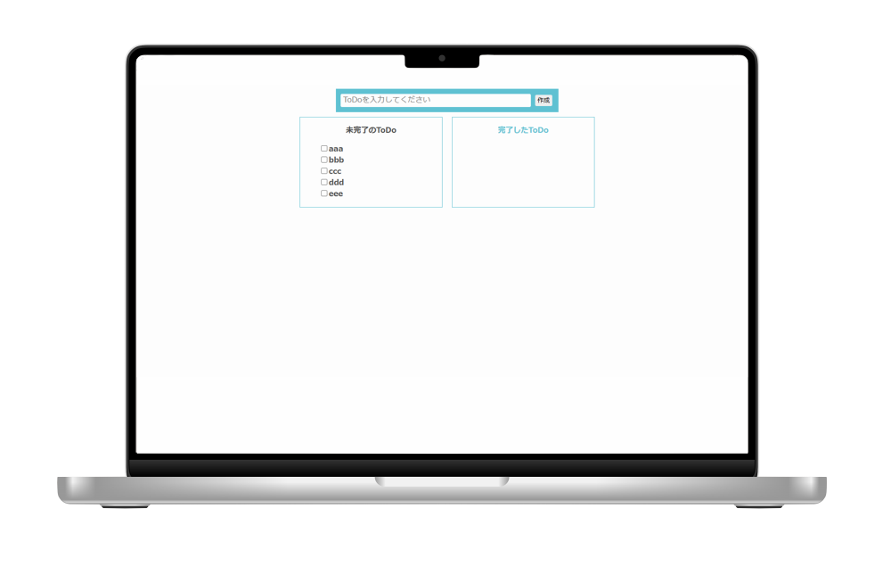

Works -制作物-
ToDoアプリ


概要
JavaScriptを使った簡単なToDoアプリケーションです。ToDoを入力し作成すると、未完了のリストに表示され、チェックをつけると完了のリストに移動し、削除もできます。完了リストから未完了リストに戻すこともできます。
制作ポイント
画面幅が小さい端末では完了リストと未完了リストが縦並びになるようにしています。
使用ツール
Visual Studio Code
リンク